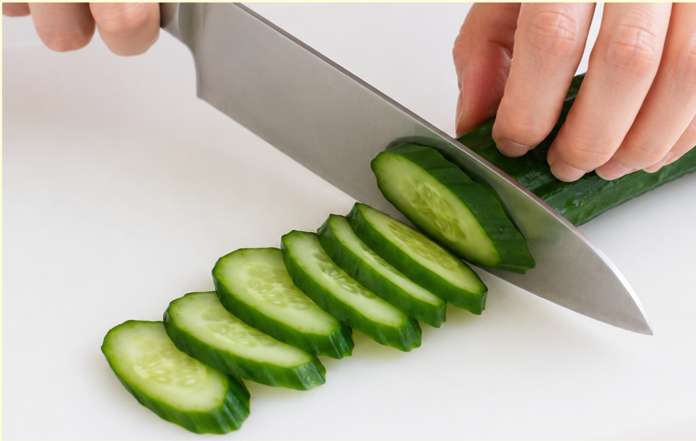
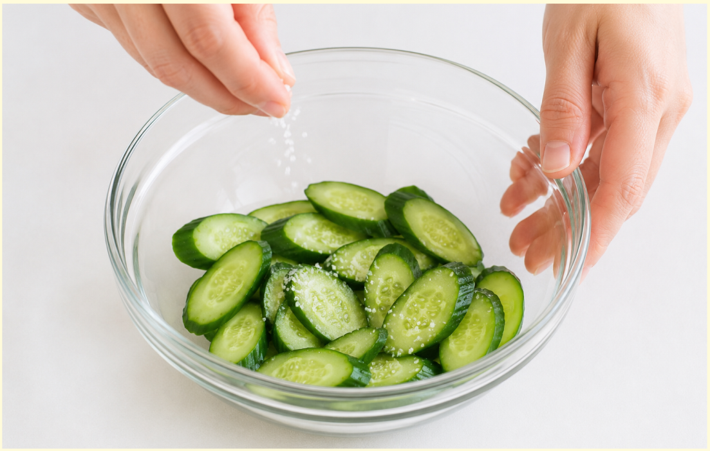
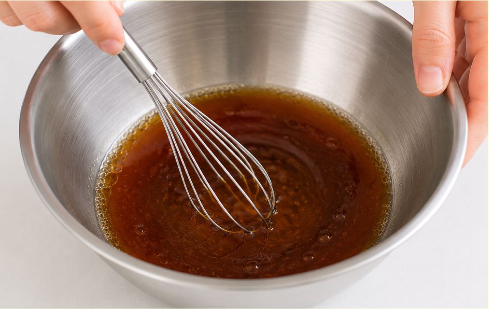
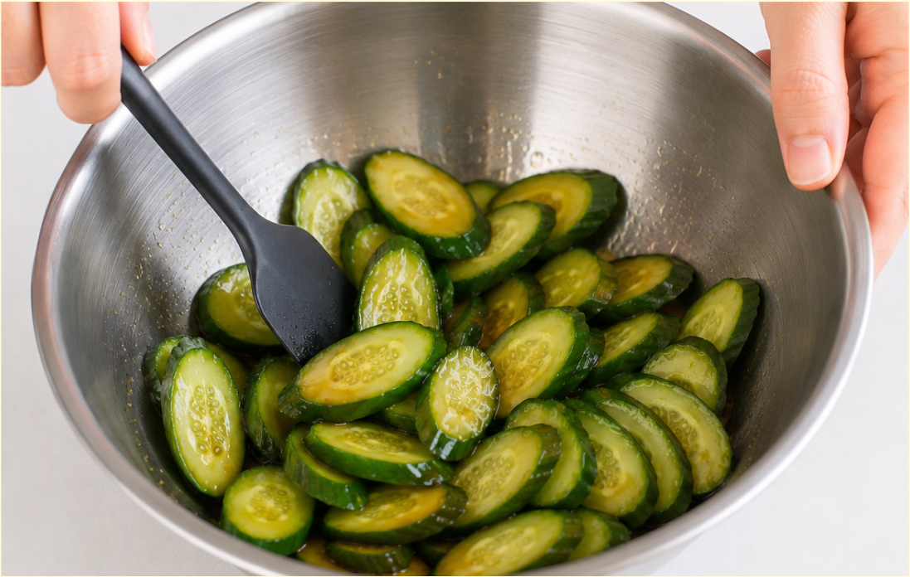
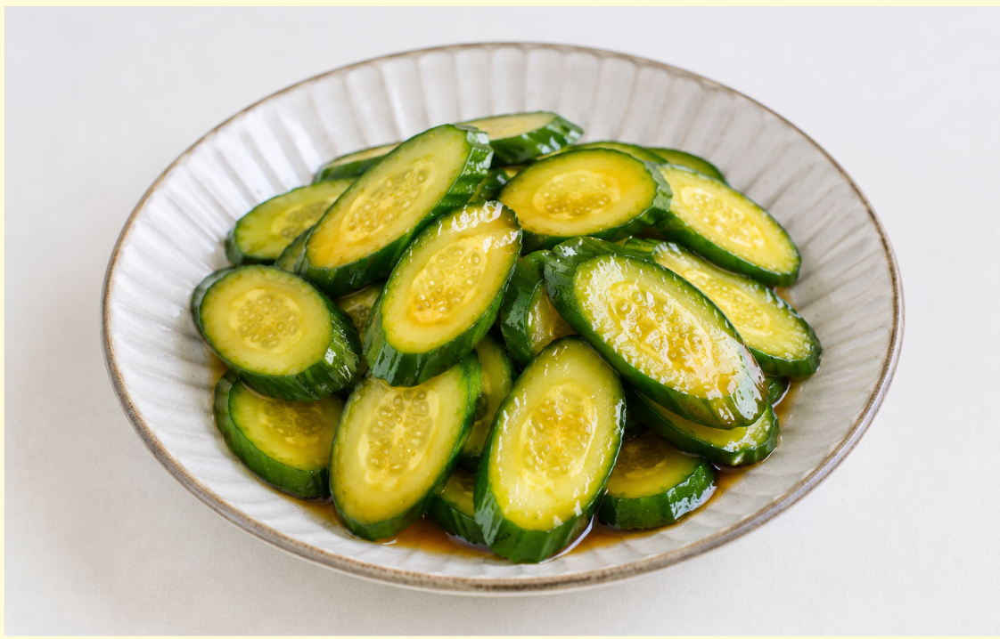

材料（一人分）
- ・きゅうり1本
- ・しょうゆ小さじ1
- ・お酢小さじ1
- ・ごま油小さじ1
- ・砂糖小さじ1/2
- ・いりごま小さじ1
必要な道具
- ・包丁
- ・まな板
- ・ボウル
- ・菜箸
注目ポイント
- 💧 水気をしっかり切る
- ⏱️ 少し置くと美味しい
作り方
① きゅうりを洗い、両端を少し切ります。 5mmくらいの薄切りにします。

② 時間があれば塩もみをします。 きゅうりに塩少々を振って軽く混ぜます。 5分ほど置いて、水分を軽くしぼります。

③ ボウルにしょうゆ、お酢、ごま油、砂糖を入れて混ぜます。 砂糖が溶けるまでよく混ぜましょう。 お好みでにんにくやラー油を加えます。

④ きゅうりをボウルに入れ、 調味料とよく和えます。 いりごまも加えて混ぜます。

⑤ 5〜10分ほど置くと味がなじみます。 お皿に盛り付けて完成です。

調理のコツ
きゅうりを切った後に
すぐ調味料を入れると、
きゅうりから水分が出て、
味が薄く感じることがあります。
塩もみして水分を軽く絞ると、
味がしっかりなじみ、
食感もよくなります。
アレンジ
わかめを加えると、
さっぱりとした副菜になります。
ハムを細切りにして加えると
食べ応えが出ます。
豆板醤を少量加えると、
ピリ辛の中華和えになります。